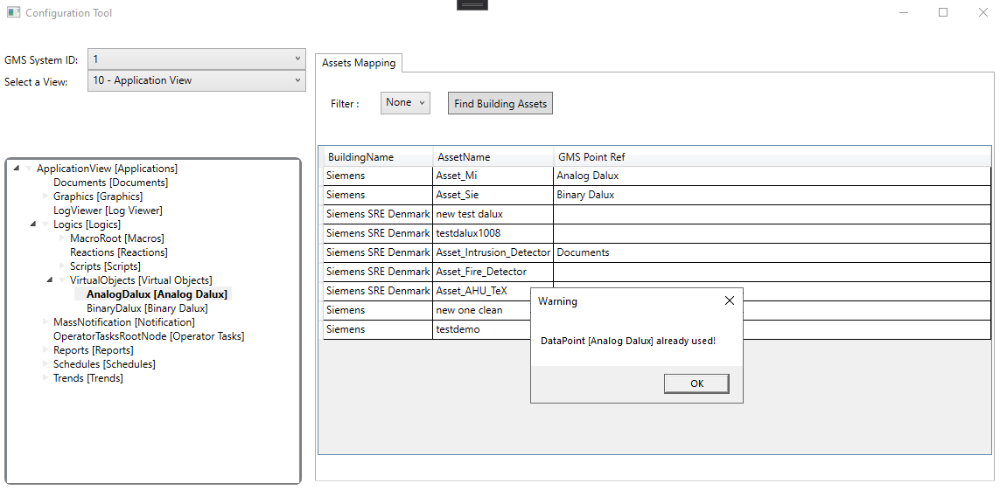

Configure Assets Mapping
- In the Event Manager Configurator, in the menu at the top of the window, select Advanced and then Assets Mapping.
- In GMS System ID, select the ID of the system whose object identifiers you want to export.
- In Select a View, choose the management system view from which you want to select the objects.
- The area below populates with the view of management system objects.
- Expand the view as necessary and select the objects you want to export.
- Drag the object to the table in the Assets Mapping pane, under the GMS Point Ref column.
NOTE: In the image below, note the warning message that appears if you try to map an object twice. - Close the Configuration Tool and select Yes to save the list of selected objects that will be the reference point for sending Dalux FM tickets.
- The BuildingAssets.config file is created or updated.
